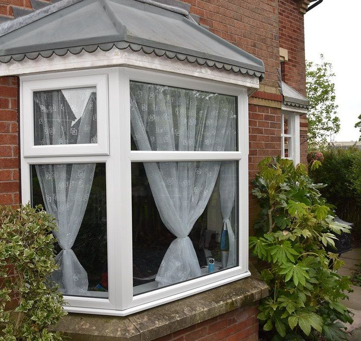

Haser Sineklik · Sancaktepe, Fırat Caddesi
Pencere açık kalsın, sivrisinek dışarıda kalsın.
Fileden geri dönüş: 0
Deneyin: fileyi toplayın, sivrisineğe ne olduğuna bakın. Sonra yeniden çekip onu dışarı gönderin.
Pencere ve kapılarınız için ölçüye özel sineklik. Plise mi, menteşeli mi, stor mu? Modelleri bu sitede çalışırken görün, ölçünüzü yazın, size uyanı birlikte seçelim.
- Pazartesi–Cumartesi 08:30–19:30
- Google'da 4,9 · 315 yorum
Beş açılış biçimi
Hepsi havayı alır, sineği tutar. Fark, nasıl açıldığında.
Sinekliğin temel türleri aşağıda kendi hareketleriyle duruyor. Birine dokunun; nasıl çalıştığını, nereye uyduğunu ve nelere dikkat etmek gerektiğini Modeller sayfasında kaydırarak deneyin. Hangi modelleri yaptığımızı ve seçenekleri bize sorabilirsiniz.
Plise
Akordeon gibi katlanıp kasanın kenarında toplanır.
Plise nasıl çalışır?Menteşeli
Kapı gibi menteşesinden açılır; sık geçilen kapılar için.
Menteşeliyi deneyinSürgülü
Rayında yana kayar; sürgülü pencere ve kapılarla uyumlu.
Sürgüyü kaydırınStor
Üstteki kutusuna sarılır; kullanılmadığında görünmez.
Storu indirinSabit
Çerçevesiyle yerinde durur; az açılan pencerelerin sade çözümü.
Sabiti inceleyin
Ölçüye özel
Hazır boy değil, sizin pencerenizin ölçüsü
Cumba, köşe pencere, geniş balkon kapısı, eski binada hafifçe eğilmiş bir kasa... İki pencere yan yana olsa bile aynı ölçüde olmayabilir. Sineklik de bu yüzden pencerenin kendisine göre düşünülür.
-
En ve boySantimetre olarak; önce en, sonra boy.
-
AdetAynı ölçüdeki pencereleri tek satırda toplayın.
-
Açılış yönüKanat içe mi açılıyor, yana mı kayıyor?
-
EngellerKol, panjur rayı, denizlik çıkıntısı varsa not edin.
Ölçüden pencereye giden yol
Sivrisineğin aksine, sizin yolunuz kısa. Ölçüyü alın, bize iletin, gerisini birlikte konuşalım.
Ölçün ya da ölçtürün
Eni ve boyu üç noktadan ölçüp en küçüğünü yazın. Ölçü rehberi adım adım anlatıyor; emin değilseniz yerinde ölçü için arayın.
Bize yazın
Ölçü formu yer, model, en, boy ve adedi düzgün bir WhatsApp mesajına çevirir. Mesajı siz görür, siz gönderirsiniz.
Birlikte netleştirelim
Model, file türü, fiyat ve montaj zamanını telefonda ya da yerinde konuşup karar verelim.
Sivrisinek ne zaman gelir?
İstanbul'da sivrisinek ılık aylarda çoğalır; çoğu yıl en yoğun dönem yaz ortasıdır. Sinekliği sıcaklar başlamadan düşünmek, ilk sıcak gecede pencereyi rahatça açmak demek.
- Düşük
- Artıyor
- Yoğun
- En yoğun
Genel eğilimdir; sıcak ve yağışlı yıllarda sezon uzayabilir.
Sineklikle birlikte işe yarayan küçük alışkanlıklar
-
Akşam saatleriEv sivrisinekleri çoğunlukla akşam ve gece hareketlenir; bazı türler gündüz de ısırır. Serinlemek için pencereyi açtığınız saatler tam da bu saatler.
-
Durgun suSaksı altlığı, kova, balkon gideri gibi yerlerde biriken su sivrisineğin üreme yeridir. Birkaç günde bir boşaltmak fark yaratır.
-
Işık ve açık pencereAkşam ışığı yanan odaya pervane ve küçük böcekler de yönelir. Filesi çekili pencere havayı alır, böceklerin çoğunu dışarıda bırakır.
Sineklik için aradığınızda bunları da sorabilirsiniz
Aşağıdaki işler için de arayıp sorun; işinizin bize uygun olup olmadığını telefonda hemen söyleyelim.
Duşakabin
Montaj ya da değişim.
PVC kapı ve pencere
Tamir, ayar ya da değişim.
Cam balkon
Tamir ve bakım.
4,9
Google'da 315 yorumla 4,9 puan
Komşularınızın ne dediğini kendi sözleriyle okuyun.
Yorumları Google'da açınDükkân Fırat Caddesi'nde
13/A, Kemal Türkler, Fırat Cd.
34785 Sancaktepe/İstanbul
Pazartesi–Cumartesi 08:30–19:30
- Pazartesi–Cumartesi08:30–19:30
- PazarKapalı